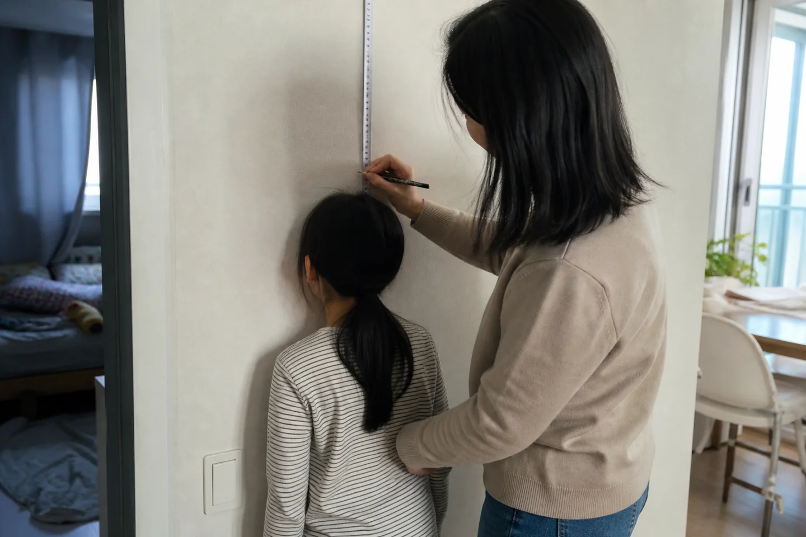
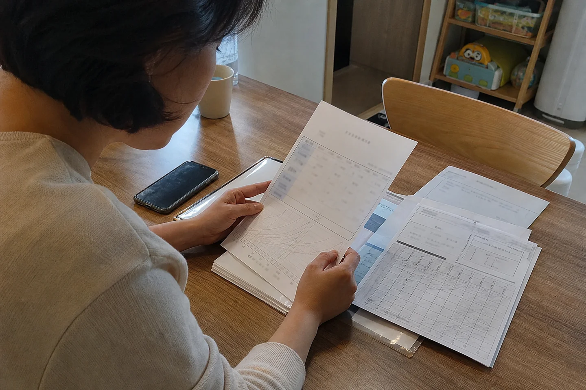

아이의 키보다 먼저 보는 것
안녕하세요. 강남역과 교대역 사이, 서초동 디어한의원입니다.
아이 키에 별로 예민하지 않다고 생각했던 부모도 어느 순간 숫자에 민감해집니다. 유치원 때까지는 “건강하게만 크면 됐지”라고 생각했는데, 초등학교에 들어가고 반 친구들이 한 줄로 서기 시작하면 이야기가 조금 달라집니다. 작년까지만 해도 비슷했던 친구가 어느 날 반 뼘쯤 커 있으면 집에 돌아와 슬쩍 묻게 됩니다.
“너 원래 민준이보다 작았나?”
아이에게는 별일 아닐 수 있습니다. 대개 이때부터 할 일이 많아지는 쪽은 부모입니다. 휴대전화 검색 기록에 ‘10살 평균키’, ‘초등학생 키성장’, ‘성장판 검사’, ‘예상키 계산기’가 하나둘 늘어나고, 엄마와 아빠의 키를 입력해 성인 예상키도 계산해봅니다. 결과가 마음에 들지 않으면 다른 계산기에서도 한 번 더 해봅니다. 이번에는 계산식이 조금 다르기를 기대하면서요.
디어한의원에서 소아성장을 볼 때는 조금 다른 숫자부터 궁금해합니다. 오늘 몇 cm인지도 중요하지만, 지난해에는 몇 cm였는지, 그 전해에는 어땠는지, 최근 몇 년 동안 아이가 자신의 성장곡선을 어떤 속도로 지나왔는지를 먼저 봅니다.

키는 한 시점의 결과입니다. 반면 성장속도에는 시간이 들어 있습니다. 소아성장을 이해할 때 이 차이는 생각보다 중요합니다.
아이들은 원래 같은 속도로 크지 않습니다
키 성장은 매년 정해진 만큼 몇 cm씩 더해지는 과정이 아닙니다. 영유아기의 빠른 성장 이후 학령기에는 비교적 안정된 속도로 자라고, 사춘기가 진행되면서 다시 성장속도가 가속됩니다. 이후 성장판의 성숙이 진행되면서 속도는 줄어들고 결국 종방향 성장이 끝납니다.
성장판 생리학을 다룬 Endocrine Reviews의 대표적 리뷰는 성장판을 종방향 성장의 핵심 표적기관으로 설명합니다. 성장판의 연골세포가 증식하고 분화하는 과정에는 성장호르몬(GH)과 IGF-1뿐 아니라 갑상선호르몬, 성호르몬, 여러 국소 성장인자가 관여합니다. 즉 ‘키가 큰다’는 눈에 보이는 결과 뒤에는 상당히 복잡한 생물학적 과정이 있습니다.1
한국 아이들을 장기간 추적한 자료에서도 성장속도가 시기마다 달라지는 모습이 확인됩니다. 강화지역 소아청소년 800명을 장기간 관찰한 종단연구에서는 평균적인 성장속도를 보인 집단의 최대 성장속도, 즉 peak height velocity가 남아에서는 12세 무렵 연간 8.62cm, 여아에서는 10세 무렵 연간 7.07cm로 나타났습니다.2 이 숫자를 모든 한국 아이의 정상값처럼 대입할 수는 없지만, 아이의 성장이 일정한 속도로 올라가는 직선이 아니라 시기에 따라 기울기가 변하는 곡선이라는 사실은 잘 보여줍니다.
강화 종단 코호트에서 평균적인 성장속도를 보인 집단의 peak height velocity 관찰값입니다. 전체 연령별 곡선을 재현한 그래프가 아니며, 개인별 예상 성장속도나 모든 한국 아이의 정상값을 뜻하지 않습니다.
Source: Chae HW et al. J Korean Med Sci. 2013.2그래서 “우리 아이 올해 5cm 컸어요”라는 말만으로는 아직 판단이 끝나지 않습니다. 같은 5cm라도 아이의 연령과 사춘기 진행 정도, 지난해와 그 전해의 성장속도에 따라 의미가 달라집니다.
반에서 몇 번째로 큰지는 눈에 잘 보입니다. 하지만 옆자리 친구가 방학 동안 몇 cm 컸는지는 우리 아이의 성장 평가 기준이 아닙니다.
민준이는 훌륭한 친구일 수 있지만, 우리 아이의 성장도표는 아닙니다.
같은 130cm라도, 지나온 길이 다르면 이야기가 달라집니다
질병관리청과 대한소아청소년과학회가 공동으로 마련한 소아청소년 성장도표는 국내 아이들의 저신장, 저체중, 비만 등 성장 상태를 평가하는 공식 기준입니다. 현재는 2017 성장도표가 제공되고 있으며, 질병관리청은 2027 성장도표 개정을 추진하고 있습니다.3
낮은 위치에서도 비슷한 곡선을 유지
평균 범위지만 최근 곡선이 하향 이동
낮은 키와 늦은 성숙 시점을 함께 해석
130cm = 같은 성장 상태가 아닙니다.
Illustrative trajectories. 실제 환자 데이터를 재현한 그래프가 아닙니다. Growth Hormone Research Society의 성장평가 원칙을 바탕으로 재구성했습니다.4그런데 성장도표에서 디어한의원이 오래 보는 것은 점 하나보다 점들이 이어지는 방향입니다.
현재 키가 똑같이 130cm인 세 아이를 생각해보겠습니다. 첫 번째 아이는 또래보다 작은 편이지만 몇 년 동안 비슷한 백분위의 성장곡선을 꾸준히 따라왔습니다. 두 번째 아이는 지금 키만 놓고 보면 평균 범위에 있지만, 몇 년 전보다 성장속도가 떨어지면서 원래 유지하던 성장곡선에서 계속 아래쪽으로 이동하고 있습니다. 세 번째 아이는 현재 키가 작은 편이지만 골연령과 사춘기의 진행이 또래보다 늦고, 부모 역시 성장기에 늦게 큰 이력이 있습니다.
오늘의 키는 같아도 세 아이에게 필요한 질문은 다릅니다.
2019년 Growth Hormone Research Society가 46명의 국제 전문가와 함께 정리한 저신장 진단·치료 국제 관점에서도 한 번의 신장 측정만으로 아이를 평가하지 않습니다. 이전 성장자료를 통한 성장속도, 가족력과 부모의 키, 신체진찰, 사춘기 진행, 골연령과 필요한 검사를 함께 살피는 것이 평가의 기본입니다.4
그래서 디어한의원에 성장 상담을 위해 오실 때는 최근에 잰 키만 기억하고 오실 필요가 없습니다. 학교 건강검진 결과나 영유아검진 기록처럼 몇 년 전 키와 체중을 확인할 수 있는 자료가 있다면 오히려 반갑습니다. 이미 촬영한 골연령이나 성장판 검사 자료가 있다면 그것도 좋습니다.
오늘의 점 하나를 아이가 지나온 몇 년의 시간 위에 다시 놓을 수 있기 때문입니다.
냉장고 옆 벽에 그어둔 연필선도 날짜만 적혀 있다면 꽤 훌륭한 자료가 됩니다.
문제는 대개 날짜가 없다는 것입니다.
성장판이 열려 있다는 말은 ‘앞으로 몇 cm’를 뜻하지 않습니다
성장판은 긴 뼈의 끝부분에 위치하는 연골성 조직입니다. 이곳에서 연골세포가 증식하고 분화하며 이후 뼈 조직으로 치환되는 과정이 반복되면서 뼈의 길이가 늘어납니다. 사춘기가 진행되면 성호르몬의 영향 아래 성장판의 성숙도 함께 진행되고, 성장판이 융합된 이후에는 길이 방향의 성장이 종료됩니다.1
따라서 “성장판이 아직 열려 있습니다”라는 말은 분명 중요합니다. 아직 종방향 성장이 가능한 생물학적 여지가 남아 있다는 뜻이기 때문입니다.
문제는 진료실을 나온 뒤 이 문장이 아주 빠르게 번역될 때입니다.
성장판이 열려 있다 = 앞으로 많이 큰다.
두 문장은 같은 뜻이 아닙니다.
골연령과 성장판의 성숙도는 아이에게 남아 있는 성장시간을 추정하는 중요한 자료이지만, 앞으로 몇 cm를 어떤 속도로 자랄지까지 단독으로 결정하지는 않습니다. 최근 성장속도, 현재 신장, 부모의 키와 사춘기의 진행 등 여러 정보가 같은 맥락 안에 들어와야 합니다. GRS 국제 전문가 문서 역시 골연령이 저신장 평가에 유용한 자료이면서도 임상 맥락 안에서 해석해야 한다고 설명합니다.4
성장판도 조금 억울할 수 있습니다.
사진 한 장 찍혔을 뿐인데 어느새 최종키 예측까지 혼자 담당하게 됐으니까요.
성인키 예측 역시 ‘예측’이라는 단어를 빼고 읽으면 곤란합니다. 2022년 Journal of the Endocrine Society에는 특발성 저신장 아동 292명의 자료를 이용해 현재 키, 부모 키, 연령, 골연령, 출생체중, 성별 등을 조합한 성인키 예측모델이 발표됐습니다. 여러 임상변수를 넣어 만든 모델에서도 예측오차는 약 3.16~3.68cm였습니다.5 이 연구는 특발성 저신장 아동을 대상으로 한 것이므로 모든 아이에게 동일한 오차범위를 적용할 수는 없지만, 예상키의 소수점 한 자리까지 확정된 미래처럼 받아들이기는 어렵다는 점을 잘 보여줍니다.
예상키가 172.4cm라고 나왔다고 해서 0.4cm까지 미래가 예약된 것은 아닙니다.
예상키는 기상예보에 가깝습니다. 택배 도착 예정시간에 가깝지는 않습니다.
키가 자라는 곳은 성장판이지만, 성장판은 혼자 일하지 않습니다
성장 이야기를 하면 가장 먼저 떠올리는 것이 성장호르몬입니다. 하지만 실제 성장생리를 ‘성장호르몬이 많이 나오면 키가 큰다’ 정도로 압축하면 중요한 부분이 상당히 빠집니다.
GH는 성장판과 여러 조직에 작용하며 IGF-1의 생성과 신호에 관여하고, IGF-1 역시 성장판 연골세포의 증식과 분화에 중요한 역할을 합니다. 여기에 갑상선호르몬과 성호르몬, 성장판 내부의 국소 신호, 영양 상태와 전신질환의 영향이 함께 들어옵니다.1
그래서 디어한의원에서는 키가 걱정되는 아이에게 키에 관한 질문만 하지 않습니다. 최근 식사량은 어떤지, 몇 숟갈 먹지 않고 배부르다고 하는지, 복통이나 변비가 반복되는지, 키와 함께 체중도 자신의 곡선을 따라 증가하고 있는지 살펴봅니다. 키와 체중이 함께 정체된 아이와 체중은 빠르게 늘고 있지만 키의 성장곡선만 달라진 아이는 같은 상황이 아닙니다.
사춘기의 진행도 중요합니다. 사춘기는 성장속도가 가속되는 시기인 동시에 성장판의 성숙이 진행되는 시기입니다. 지금 빠르게 자라고 있다는 사실과 앞으로 성장할 시간이 많이 남아 있다는 사실도 같은 문장은 아닙니다.
수면 역시 조금 더 정확하게 볼 필요가 있습니다. 성장호르몬은 맥동성으로 분비되며 수면과 관련되어 있고, 특히 수면 시작 이후 서파수면과 GH pulse가 시간적으로 연결되는 현상이 관찰됩니다. 하지만 이것을 “밤 10시부터 새벽 2시에만 키가 큰다”라는 네 시간짜리 공식으로 옮기기에는 실제 인체가 훨씬 복잡합니다.
사춘기 아동을 대상으로 한 생리학적 실험에서는 서파수면과 GH pulse의 시간적 연관성이 확인됐지만, 실험적으로 서파수면을 방해했다고 전체적인 GH pulse의 빈도나 크기가 유의하게 감소하지는 않았습니다.6 표본이 작은 생리학 연구이므로 수면 전체의 중요성을 평가하는 연구는 아니지만, 특정 시각대 하나를 성장호르몬의 절대적 ‘골든타임’처럼 설명하는 단순화에는 주의를 줄 만한 결과입니다.
성장호르몬이 밤 10시에 출근카드를 찍고 새벽 2시에 칼퇴하는 직원은 아닙니다.
그렇다고 아이의 수면을 가볍게 보자는 이야기도 아닙니다. 디어에서는 ‘몇 시에 잠들었나’ 한 문항에 집중하기보다 실제 수면시간이 충분한지, 취침과 기상 시간이 계속 흔들리지 않는지, 아침 식사와 활동까지 하루의 리듬이 어떻게 이어지는지를 함께 봅니다.
그래서 디어한의원에서는 ‘성장한약’부터 정하지 않습니다
성장한약이라는 이름은 아주 직관적입니다. 키가 걱정되는 아이가 먹으면 키를 더 크게 만드는 하나의 정해진 처방이 있을 것처럼 들립니다.
그래서 부모님들이 가장 먼저 궁금해하는 질문도 비슷합니다.
“몇 개월 먹으면 몇 cm 정도 더 클까요?”
충분히 궁금할 만합니다. 다만 디어한의원에서 성장한약을 생각하는 순서는 조금 다릅니다.
저희가 먼저 알고 싶은 것은 이 아이에게 몇 cm가 더 필요한가가 아니라, 현재 이 아이의 성장이 어떤 조건 위에서 진행되고 있는가입니다.
같은 어린이 키성장 고민으로 찾아온 아이도 실제 모습은 다릅니다. 원래부터 식사량이 적고 체중이 좀처럼 늘지 않는 아이가 있는가 하면, 잘 먹지만 복통이나 변비 같은 소화기 불편이 반복되는 아이도 있습니다. 취침 시간이 계속 밀리고 아침 식사를 거의 하지 않는 아이가 있는 반면, 생활습관은 비교적 안정적이지만 몇 년에 걸쳐 성장곡선의 기울기가 낮아지는 아이도 있습니다. 사춘기의 변화가 빠르게 나타나 남은 성장시간을 함께 살펴야 하는 경우도 있습니다.
같은 ‘키 고민’이라는 이유만으로 이 아이들을 같은 방식으로 볼 이유는 없습니다.
디어한의원에서는 최근 성장속도와 이전 성장곡선, 키와 체중의 변화, 식욕과 소화, 배변, 수면과 피로, 활동량, 사춘기의 진행을 함께 살펴봅니다. 기존 골연령이나 성장판 검사 결과가 있다면 그 사진 한 장으로 결론 내리기보다, 검사 전후 실제로 아이가 어떻게 자랐는지를 다시 연결합니다.
사람의 몸에는 아쉽게도 ‘성장 +3cm’ 버튼이 따로 없습니다.
있었다면 저희도 진료가 조금 편했을 겁니다.
성장한약을 연구한 무작위 위약대조시험도 있습니다
그러면 한약재를 활용한 어린이 키성장 임상연구는 실제로 있을까요?
있습니다.
Below 10th percentile 하위집단의 군 간 평균 차이 +0.45cm
특정 표준화 복합추출물 HT042를 24주간 사용한 무작위 위약대조시험의 연구집단 결과입니다. 모든 성장한약이나 개인의 예상 성장량으로 일반화할 수 없습니다.72018년 Phytotherapy Research에는 경도의 저신장을 보인 6~8세 아동을 대상으로 한 다기관 무작위 이중맹검 위약대조시험이 발표됐습니다. 연구에서 사용된 것은 황기, 가시오갈피, 속단을 원료로 구성한 표준화 복합추출물 HT042였습니다.7
최종 분석에 포함된 129명의 아동을 24주 동안 관찰한 결과, HT042군의 신장 증가는 위약군보다 평균 0.29cm 더 컸습니다. 95% 신뢰구간은 0.01~0.57cm였고, 시작 신장이 10백분위수 미만이었던 하위집단에서는 군 간 평균 차이가 0.45cm였습니다.7
0.29cm.
광고 배너 한가운데 크게 쓰기에는 조금 얌전한 숫자입니다.
그런데 오히려 그래서 이 연구를 제대로 읽어볼 필요가 있습니다.
아이들은 치료하지 않아도 자랍니다. 따라서 “한약을 먹은 뒤 6개월 동안 3cm가 컸다”라는 전후 비교만으로는 그 3cm 가운데 자연성장분과 중재에 의한 차이를 구분할 수 없습니다. 무작위 위약대조시험의 장점은 같은 시간 동안 자연스럽게 자라는 비교군을 함께 둔다는 데 있습니다. 이 연구에서 눈여겨봐야 할 숫자는 HT042군의 총 성장량 하나가 아니라 위약군과 비교했을 때 나타난 0.29cm의 군 간 차이입니다.
그리고 더 중요한 구분이 있습니다.
HT042는 조성과 용량을 표준화해서 시험한 특정 복합추출물입니다. 이 임상시험이 존재한다는 사실을 곧바로 “모든 성장한약은 아이 키를 0.29cm 더 크게 만든다”라는 문장으로 바꿀 수는 없습니다.
특정 제제에 관한 연구와 개별 아이의 상태에 맞춰 구성하는 한약 처방은 동일한 대상이 아닙니다.
연구가 있다는 사실과, 그 연구가 어디까지 말할 수 있는가는 서로 다른 문제입니다.
디어한의원에서는 이 차이를 중요하게 생각합니다. 연구 결과를 괜히 작게 말할 필요는 없습니다. 그렇다고 논문 한 편이 감당할 수 있는 범위보다 크게 만들어서 설명할 이유도 없습니다.
실제 한의진료 자료도 있습니다. 다만 같은 무게의 근거는 아닙니다
2022년 Medicine에는 특발성 저신장 기준에 해당하면서 한약을 포함한 한의치료를 받은 소아의 의무기록을 분석한 국내 연구가 발표됐습니다. 총 116명의 기록을 후향적으로 분석했고, 추적과정에서 신장 백분위와 height SDS의 증가가 관찰됐습니다.8
다만 이 연구는 무작위 위약대조시험이 아니라 이미 이루어진 진료를 뒤에서 살펴본 증례군입니다. 대조군이 없기 때문에 관찰된 성장 변화 전체를 한약의 순수한 치료효과로 분리할 수 없습니다. 연구가 실제 임상에서 어떤 아이들이 어떤 치료를 받았고 이후 어떤 변화가 기록됐는지를 보여주는 데 의미가 있다면, 앞에서 살펴본 HT042 연구는 특정한 표준화 제제가 위약과 비교해 어떤 차이를 냈는지 평가하는 데 더 적합한 설계입니다.
HT042 · n=129
Placebo control · 24 weeks
특정 표준화 제제가 위약과 비교해 차이를 보였는가?Integrative Korean Medicine · n=116
No control group
실제 임상 기록에서 어떤 변화가 관찰됐는가?논문이라는 이름이 붙었다고 모든 연구가 같은 무게를 가지지는 않습니다.
Sources: Lee et al. 2018; Kim et al. 2022.논문이라는 이름이 붙었다고 모든 연구가 같은 무게를 가지는 것은 아닙니다.
디어의 Clinical Journal에서 연구를 여러 편 소개하는 이유도 여기에 있습니다. 논문의 개수를 늘리는 것보다 어떤 연구가 무엇을 말할 수 있고, 무엇까지는 말할 수 없는지를 구분하는 편이 더 중요하기 때문입니다.
성장곡선이 보내는 신호를 생활습관으로 덮어쓰지는 않습니다
한 가지는 더 분명히 해두고 싶습니다.
키가 잘 자라지 않는다고 해서 모든 이유를 식욕, 소화, 수면으로 설명할 수는 없습니다.
성장속도의 의미 있는 감소나 뚜렷한 저신장에는 성장호르몬 결핍을 비롯한 내분비질환, 만성 전신질환, 영양 문제, 유전적 원인과 골격계 질환 등 여러 원인이 숨어 있을 수 있습니다. 2019년 GRS 국제 전문가 문서는 저신장이나 성장감속을 평가할 때 병력과 가족력, 신체진찰과 성장자료를 먼저 면밀히 살피고, 임상적 단서에 따라 추가적인 내분비·유전학적 평가를 진행하는 접근을 제시합니다.4
성장호르몬 치료 역시 모든 ‘작은 아이’에게 하나의 방식으로 적용하는 치료가 아닙니다. Pediatric Endocrine Society의 GRADE 기반 임상진료지침은 성장호르몬 결핍증, 특발성 저신장, 일차성 IGF-1 결핍 등 서로 다른 진단군을 구분해 성장호르몬 및 IGF-1 치료의 적응과 의사결정을 다룹니다.9
디어한의원에서도 성장곡선이 보내는 신호를 억지로 한 가지 설명에 맞추지 않습니다.
최근 성장속도가 뚜렷하게 떨어졌거나, 과거 기록과 연결했을 때 추가적인 의학적 평가가 필요한 흐름이라면 그 가능성을 먼저 확인해야 합니다. 성장한약은 그 판단을 건너뛰기 위한 치료가 아니라, 아이의 현재 상태를 충분히 읽은 뒤 진료 안에서 위치가 정해져야 합니다.
디어에서는 성장한약보다 먼저 아이의 성장 이야기를 정리합니다
실제 진료실의 아이들은 논문 속 연구대상처럼 깔끔한 조건문으로 들어오지 않습니다.
“키가 잘 안 커요.”
시작은 대개 짧습니다.
하지만 시간을 조금씩 거슬러 올라가면 이야기는 길어집니다. 몇 년 동안 자기 성장곡선을 잘 따라오다가 최근 1년 사이 속도가 떨어진 아이가 있고, 원래 작은 편이었지만 부모도 어린 시절 비슷했고 사춘기 이후 늦게 큰 가족력이 있는 아이도 있습니다. 최근 들어 식사량과 체중 증가가 함께 줄었을 수도 있고, 사춘기 변화가 빠르게 나타나면서 한동안 키가 부쩍 컸을 수도 있습니다.
오늘의 키보다,
아이에게 쌓여온 시간을 먼저 연결합니다.
- Past records과거 키·체중 기록
- Growth velocity최근 성장속도
- Current height & weight현재 키·체중
- Bone age / Growth plate골연령·성장판 자료
- Puberty사춘기 진행
- Clinical interpretation성장의 흐름 해석
- Treatment plan진료 방향 결정
그래서 디어한의원에서는 가능하다면 최근 6개월의 숫자만 보지 않습니다.
이전 건강검진의 신장과 체중, 몇 년 동안 이어진 성장곡선, 부모의 키와 성장 시기, 기존 골연령 자료, 식사와 소화, 수면과 활동, 체중의 흐름과 사춘기의 진행을 같은 시간축 위에 놓습니다.
그렇게 하나씩 연결해 보면 처음에는 하나였던 문장이 조금씩 분해됩니다.
‘키가 작다’는 것은 결과이지, 아직 원인은 아닙니다.
그리고 원인이 하나가 아니므로 성장 진료의 방향도 아이마다 달라집니다.
이것이 디어한의원이 성장한약을 ‘몇 개월짜리 키 프로그램’보다 아이의 성장과정을 먼저 읽는 진료로 생각하는 이유입니다.
예상키를 한 번 더 계산하기보다, 지난해 기록을 찾아보셔도 좋습니다
강남역 한의원을 찾으며 소아성장이나 성장한약을 고민하는 부모님들이 결국 가장 궁금해하는 질문은 비슷합니다.
“그래서 우리 아이는 앞으로 얼마나 클까요?”
아마 성장에 관한 많은 질문의 끝에는 이 숫자가 있을 겁니다.
디어한의원에서도 그 궁금증을 가볍게 생각하지 않습니다. 다만 미래의 키를 서둘러 한 숫자로 만들어내는 것보다, 지금까지 아이에게 실제로 무슨 일이 있었는지를 먼저 정리하려고 합니다.
지난해와 올해 사이 얼마나 자랐는지, 몇 년 동안 어떤 성장곡선을 유지해왔는지, 어느 시점부터 기울기가 달라졌는지, 키와 함께 체중은 어떻게 움직였는지, 골연령과 사춘기의 진행은 어느 단계인지, 식사와 수면의 변화는 언제부터 시작됐는지를 살펴봅니다.

그래서 성장 상담을 앞두고 계시다면 예상키 계산기를 한 번 더 돌리는 대신 지난해 건강검진표를 찾아보셔도 좋겠습니다. 몇 년 전 영유아검진 기록이나 학교 신체검사 결과도 좋습니다. 이전에 받은 골연령이나 성장판 검사 결과가 있다면 함께 가져오셔도 됩니다.
아이의 키가 만들어진 시간을 읽는 데 도움이 됩니다.
성장판은 앞으로 성장할 시간이 얼마나 남아 있는지 살펴보는 중요한 단서입니다. 성장곡선은 아이가 지금까지 그 시간을 어떤 속도로 지나왔는지를 보여줍니다.
그리고 그 둘 사이에는 식사와 소화, 수면과 체중, 사춘기와 아이가 보내온 하루하루가 있습니다.
키는 결과입니다. 디어한의원의 성장 진료는 그 결과가 만들어지고 있는 과정을 읽는 일에서 시작합니다.
자주 묻는 질문
아이가 또래보다 작지 않아도 성장속도가 느리면 살펴봐야 하나요?
그렇습니다. 현재 키가 평균 범위 안에 있더라도 이전에 유지하던 성장곡선에서 지속적으로 아래쪽으로 이동하거나 성장속도가 뚜렷하게 감소했다면 현재 키 한 번만으로는 성장 상태를 충분히 설명하기 어렵습니다. 반대로 현재 키가 작은 편이더라도 자기 성장곡선을 꾸준히 따라가는 아이도 있습니다. 성장 평가에서 연속적인 성장자료가 중요한 이유입니다.34
성장판이 열려 있으면 앞으로 많이 클 수 있나요?
성장판이 열려 있다는 것은 길이 방향의 성장이 가능한 여지가 남아 있다는 중요한 정보입니다. 그러나 앞으로의 성장량은 성장판의 개방 여부 하나만으로 정해지지 않습니다. 최근 성장속도, 골연령, 현재 키, 부모의 키와 사춘기의 진행 정도 등을 함께 해석해야 합니다.45
밤 10시 전에 반드시 자야 키가 크나요?
성장호르몬의 맥동성 분비와 수면, 특히 서파수면 사이에는 시간적인 연관성이 있습니다. 그러나 성장호르몬이 밤 10시부터 새벽 2시 사이에만 분비되는 것은 아닙니다. 특정한 네 시간대를 절대적인 성장 공식으로 생각하기보다 아이가 충분하고 안정적인 수면을 유지하고 있는지를 함께 보는 편이 실제 성장생리에 더 가깝습니다.6
성장한약을 먹으면 몇 cm 더 클 수 있나요?
특정 표준화 복합추출물 HT042를 대상으로 한 다기관 무작위 이중맹검 위약대조시험에서는 24주 후 위약군과 비교해 평균 0.29cm의 군 간 성장 차이가 보고됐습니다. 다만 이는 6~8세의 특정 신장 범위에 해당하는 아동에게 특정 조성의 제제를 사용한 연구 결과입니다. 이 수치를 모든 성장한약이나 모든 아이의 예상 성장량으로 적용할 수는 없습니다.7 디어한의원에서는 개월 수와 예상 cm부터 정하기보다 성장곡선과 아이의 현재 상태를 먼저 살펴봅니다.